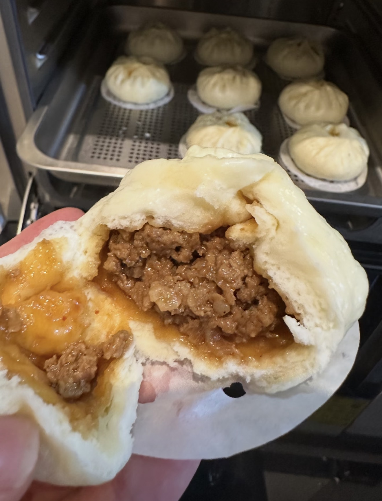

Steamed Pork Bun
鲜肉包 — Fluffy steamed buns filled with savory pork.
Ingredients
- 300 g ground pork
- 2 cups flour
- 1 tsp yeast
- Soy sauce
- Ginger and scallions
Directions
- Mix ground pork with soy sauce, ginger, and scallions.
- Prepare the dough with flour and yeast and let it rise.
- Divide the dough and wrap the pork filling inside.
- Place buns in a steamer and steam for about 15 minutes.